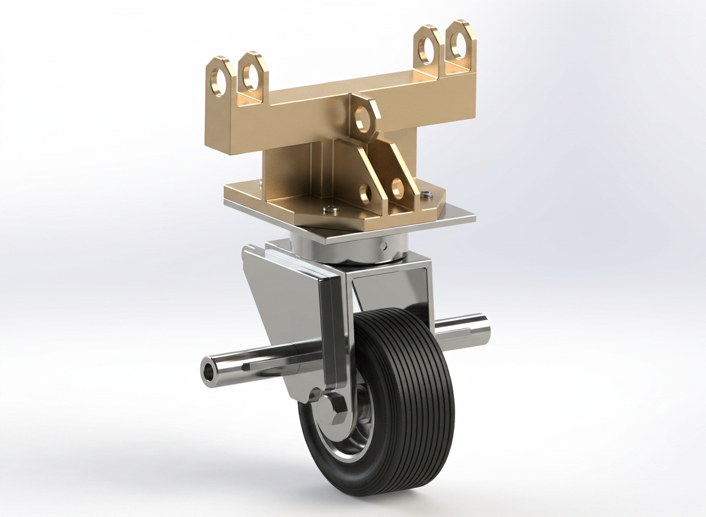

Engineering
case studies.
The problems behind the models — requirements, decisions, analysis and measurable outcomes.

NH90 Helicopter – False Landing Gear
Design and develop a dummy/false landing gear system for the NH90 helicopter to support aircraft ground movement and maintenance while replicating the functional interfaces of the original landing gear.

Infusion Set for Insulin Pump – Design & Development
Design and develop an infusion-set mechanical subsystem for an insulin pump while addressing functional performance, structural integrity, manufacturability and safety-related design requirements.

Jishuken – A400 Small Parts Material Flow & Supply Optimization
Optimize an A400 small-parts supply operation experiencing high-frequency supply cycles, multiple handling touch points and waiting caused by traffic congestion, chute fullness and AGV stops.
ANALYTICSPYTHON · POSTGRESQL · STREAMLIT
Aircraft Maintenance & BITE Fault Analytics Dashboard
Built an end-to-end analytics platform connecting aircraft fault detection, BITE events, maintenance records and system-level fault trends to support maintenance decision-making.